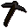
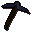

Nurmof's Pickaxe Shop.
Inventory config
pickaxeshopRun by  Nurmof. Open in knowledge graph →
Nurmof. Open in knowledge graph →
Located in: Dwarven Mine (underground)
Stock
| Item | Stock | Value | Sells for |
|---|---|---|---|
| 6 | 1 gp | 1 gp | |
 Iron pickaxe | 5 | 140 gp | 140 gp |
| 4 | 500 gp | 500 gp | |
 Mithril pickaxe | 3 | 1300 gp | 1300 gp |
| 2 | 3200 gp | 3200 gp | |
| 1 | 32000 gp | 32000 gp |
Shop sells at 100.0% of item value and buys at 60.0%.